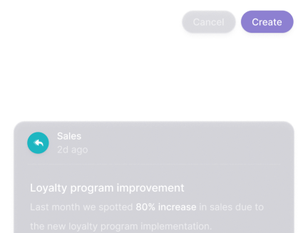

Within your data lies a story, let Narrative BI tell it.
With our secure and user-friendly solution, your company can easily explore a massive amount of data and get meaningful insights from that data in seconds.
Make Quicker Decisions
Narrative BI users receive meaningful insights that lead to faster data-driven decisions.
By automating insights, users are empowered to drive the business forward without asking specialists to perform ad-hoc queries which slows them down.Eliminate Dependencies
Leadership, Marketing, Sales, Finance, and other non-technical areas of a business often struggle with the time it takes to gain insight from their data.
Narrative BI’s simple interface allows non-technical users to gain insights on their own eliminating dependencies on the data team within the organization. 